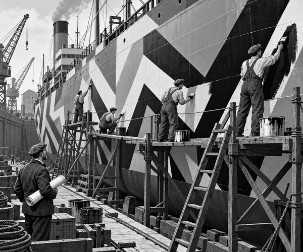

FACT
It was 1917, during World War One.
Britain needed ships.
Merchant ships carried food, fuel and tools across the sea.
But enemy submarines were hunting them.
A ship in open water was hard to hide.
There were no trees to hide behind.
There were no walls.
Even grey paint could not make a large ship vanish.
An artist named Norman Wilkinson had an unusual idea.
What if the ship did not try to disappear?
What if it tried to look confusing?
Norman drew thick stripes.
He added sharp zigzags.
He made curves cut across straight lines.
The pattern broke up the shape of the hull.
It became hard to see where the bow ended.
It became hard to see which way the ship was turning.
The idea was called dazzle camouflage.
Dazzle fact: Dazzle paint did not make a ship invisible. Its bold shapes were meant to confuse an observer about the ship's size, course and speed.
This mattered to a submarine crew.
A torpedo took time to cross the water.
It had to be aimed ahead of a moving ship.
A wrong guess could make it miss.
Norman's idea had to be tested.
A team of artists made small model ships.
They painted each model with a different pattern.
One had giant teeth.
One had sweeping curves.
One seemed to point in two directions at once.
The artists studied the models from different angles.
They chose the most confusing designs.
Then they made scale drawings for real ships.
The drawings travelled to busy docks.
There, painters faced an enormous blank hull.
First, they copied broad outlines onto the steel with chalk.
Then they climbed safe wooden staging.
Brush by brush, the strange pattern grew.
A black triangle crossed the bow.
A pale curve bent around the middle.
Huge zigzags climbed towards the deck.
The two sides did not even need to match.
At last, the ship left the dock.
From one angle, it looked short.
From another, it seemed to turn.
The sea had become a moving puzzle.
Big paint fact: More than 4,000 British ships received dazzle camouflage during World War One.
Dazzle could not make any voyage safe.
Crews still needed lookouts, convoys and careful plans.
But the strange paint gave enemy observers a harder puzzle.
The ship that could not hide had found another trick.
It wore zigzags.
1. What was dazzle paint meant to confuse?
2. Who tested designs on small ship models?
3. What did painters mark first?